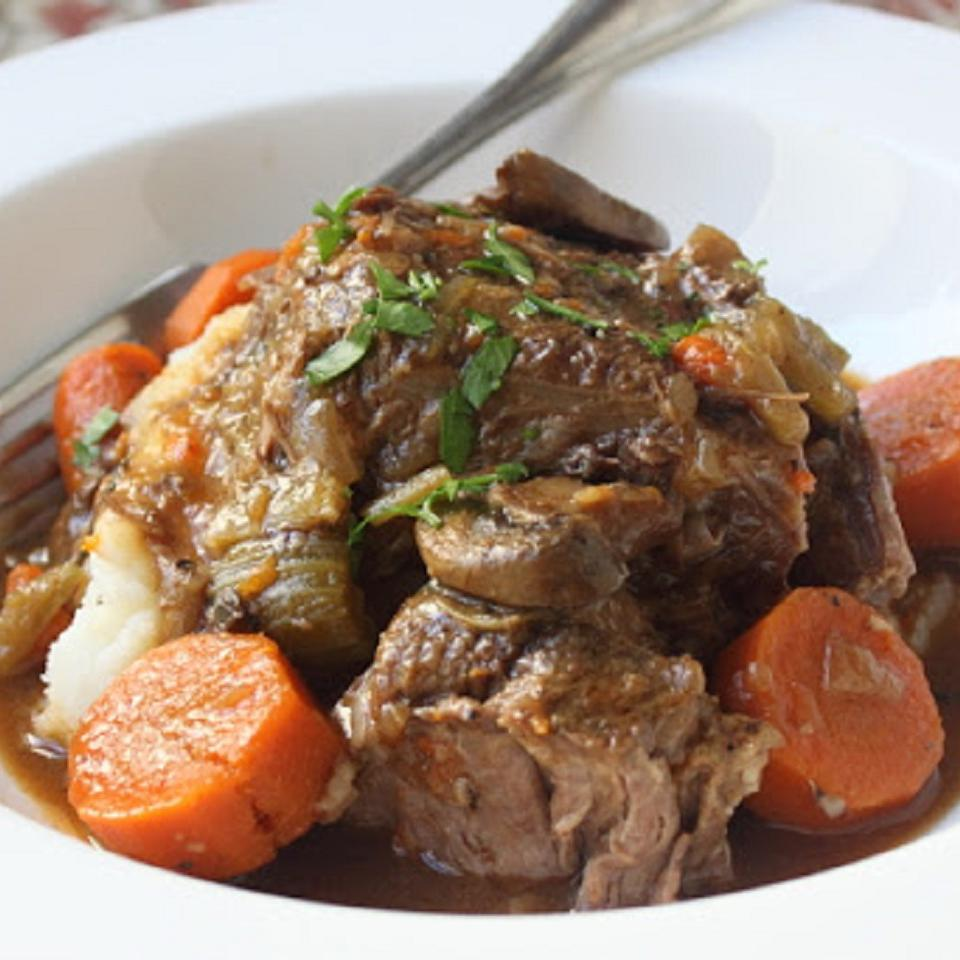

Slow Cooker Beef Pot Roast

About the dish:
The real secret here is making sure you sear the meat before the long, slow braising. Serve with mashed potatoes.
Ingredients
- 1 (5 pound) bone-in beef pot roast.
- Salt and pepper to tast.
- 1 tablespoon all-purpose flour, or as needed.
- 2 tablespoons vegetable oil.
- 8 ounces sliced mushrooms.
- 1 medium onion, chopped.
- 2 cloves garlic, minced.
- 1 tablespoon butter.
- 1 ½ tablespoons all-purpose flour.
- 1 tablespoon tomato paste.
- 2 ½ cups chicken broth.
- 3 medium carrots, cut into chunks.
- 2 stalks celery, cut into chunks.
- 1 sprig fresh rosemary.
- 2 sprigs fresh thyme.
Steps
- Generously season both sides of roast with salt and pepper. Sprinkle flour over the top until well coated, and pat it into the meat. Shake off any excess.
- Heat vegetable oil in a large skillet over medium-high heat until hot. Sear the roast on both sides for 5-6 minutes each, until well browned. Remove from the skillet and set aside.
- Reduce the heat to medium and stir in mushrooms and butter; cook for 3-4 minutes.
- Stir in onion; cook for 5 minutes, until onions are translucent and begin to brown. Add garlic, stir for about a minute.
- Stir in 1 1/2 tablespoons flour; cook and stir for about 1 minute. Add tomato paste, and cook for another minute.
- Slowly add chicken stock, stir to combine, and return to a simmer. Remove skillet from the heat.
- Place carrots and celery in the slow cooker. Place roast over the vegetables and pour in any accumulated juices. Add rosemary and thyme.
- Pour onion and mushroom mixture over the top of the roast. Cover slow cooker, turn to high and cook the roast for 5-6 hours, until the meat is fork tender.
- Skim off any fat from the surface and remove the bones. Season with salt and pepper to taste.
Go back